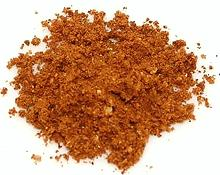

 |
Tikka Masala PowderIndia, Tanzania, South Africa - Tikka Masala Podi | ||||
| Makes: Effort: Sched: DoAhead: |
8 T ** 15 min Yes |
Powder used to season tandouri roasted chicken and meats in India, and grilled meats of all kinds in Equatorial East and Southern Africa. This recipe fills a 4 oz spice jar. | |||
|
------- 1-1/2 1-1/2 0.8 ------- 3 4 6 1-1/2 1/2 1 1-1/2 |
--- T T oz --- in t t T |
-- Dry Roast Cumin seeds Coriander seeds Kashmir Chilis (1) ------------- Black Cardamom (2) Green Cardamom Cloves Cinnamon Turmeric Peppercorns black Amchur Powder (3) |
Make: - (20 min)
|